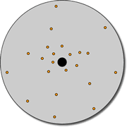
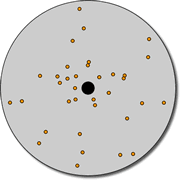

|
 |
 |
| Rotationally supported objects (left) have the majority of stars orbiting in the same direction. With velocity dispersion (right), approximately equal numbers of stars orbiting in all directions. | |
The stellar motions (orbits) which support a self-gravitating body against collapse can either be ordered or random. The most prevalent form of ordered motion is rotation, in which the majority of stars orbit in the same direction (e.g. the thin and thick disks of spiral galaxies). If a galaxy shows strong rotation it is said to be ‘rotation supported’.
However, elliptical galaxies and the stellar halos and bulges of spiral galaxies possess little or no rotation. In these situations the stellar orbits are random, with as many stars orbiting in one direction as there are orbiting in another. Such galaxies are said to be ‘velocity dispersion’ (or pressure) supported.
While rotation can often be measured by simply determining the redshift at a number positions across the galaxy, the slightly more difficult measurement of velocity dispersion requires a measure of the velocity broadening of spectral lines.